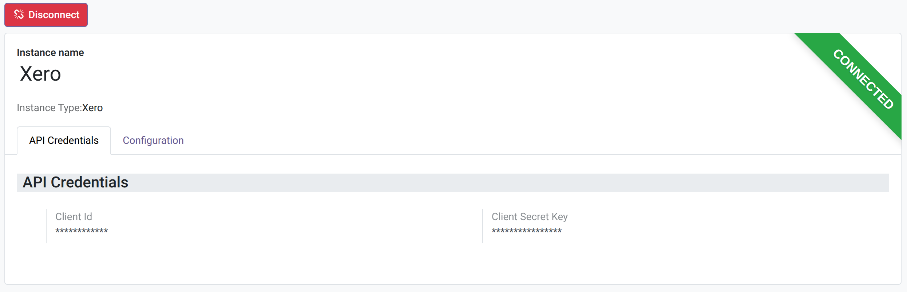
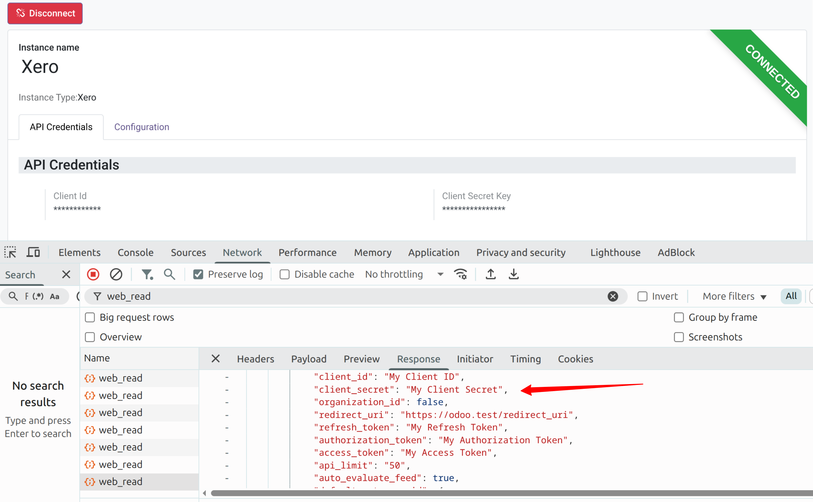

Obscure Field
Add a Char-compatible Odoo field for credentials that must not appear raw in form view network responses, read APIs, or exports.
The Problem
A common implementation mistake is to store credentials such as passwords, API keys, client secrets, and access tokens in regular character fields, then only hide them visually in the form view. The value may look protected to the user, but the browser can still receive the original value behind the scenes.
For example, an integration module might define credential fields
as plain fields.Char values:
from odoo import fields, models
class Marketplace(models.Model):
_name = 'marketplace'
client_id = fields.Char(string='Client ID')
client_secret = fields.Char(string='Client Secret')
refresh_token = fields.Char(string='Refresh Token')
access_token = fields.Char(string='Access Token')The form view may then apply the password option to mask the value on screen:
<group>
<field name="client_id"/>
<field name="client_secret" password="True"/>
<field name="refresh_token" password="True"/>
<field name="access_token" password="True"/>
</group>
This is not enough. Inspecting the browser network tab can still reveal the sensitive values in the response payload, even though the form input displays a masked value.

Obscure Field fixes the problem at the field layer. Only fields
declared as fields.Obscure are masked in read,
web_read, and export responses.
Key Features
- Declare sensitive values with
fields.Obscureinstead of regularfields.Char. - Return
******for populated obscure fields inreadandweb_readpayloads. - Mask exported values to reduce accidental CSV or XLSX credential disclosure.
- Keep the real stored value available to trusted server-side Python code through
record.field. - Ignore all-star placeholder writes, so saving a form does not overwrite the existing credential.
- Apply masking only to fields explicitly declared as
fields.Obscure.
Example Code
Declare sensitive fields with fields.Obscure:
from odoo import fields, models
class Marketplace(models.Model):
_name = 'marketplace'
client_secret = fields.Obscure(string='Client Secret')
refresh_token = fields.Obscure(string='Refresh Token')
access_token = fields.Obscure(string='API Access Token')Backend usage
def action_connect(self):
secret = self.client_secret
token = self.access_token
# Use the real values for trusted backend logic.Response payload
{
"client_secret": "******",
"refresh_token": "******",
"access_token": "******"
}Behavior
| Operation | Result |
|---|---|
record.client_secret |
Returns the real value to server-side Python code. |
read / web_read |
Returns ****** when the field has a value. |
| Export | Returns a masked value instead of the stored credential. |
write({'client_secret': '******'}) |
Ignored as an unchanged placeholder. |
write({'client_secret': 'new-secret'}) |
Saves the new value. |
Important Limits
This module currently hides values from read/export payloads. It does not encrypt values at rest and it does not replace Odoo access control, record rules, or proper group permissions.